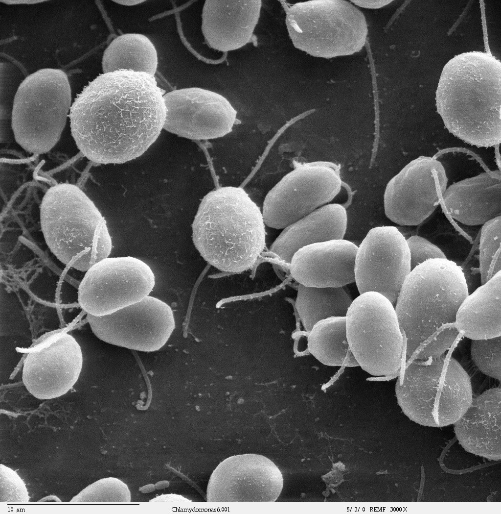
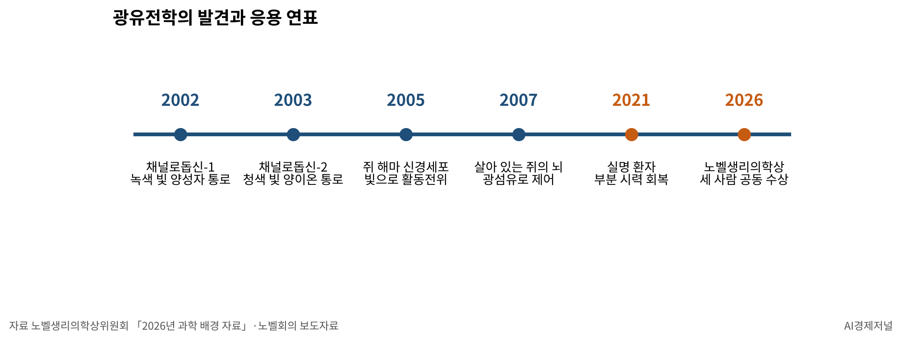
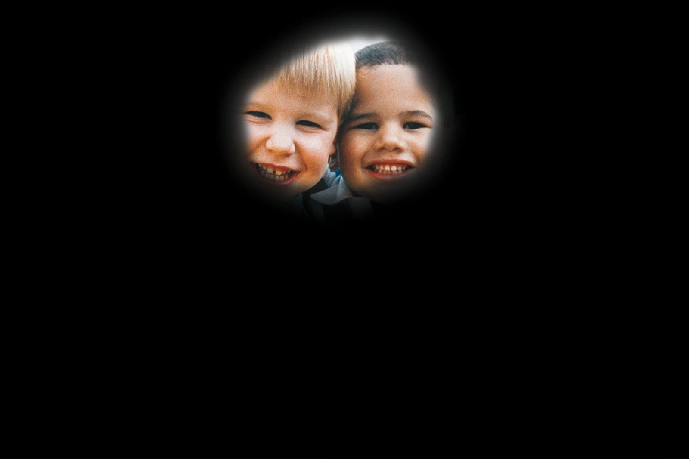

[노벨생리의학상] 녹조류 단백질에서 나온 신경세포의 빛 스위치
헤게만·나겔의 2002~2003년 채널로돕신 발견
다이서로스의 2005년 신경세포 빛 제어와 광유전학
2021년 실명 환자 부분 시력 회복, 임상시험 진행
AI경제저널=김갑봉 기자 | 2026년 10월 5일 스웨덴 카롤린스카연구소 노벨회의가 노벨생리의학상 수상자를 발표했다. 수상자는 셋이다.
칼 다이서로스(Karl Deisseroth)는 미국 하워드휴스의학연구소·스탠퍼드대 교수다. 페터 헤게만(Peter Hegemann)은 독일 베를린 훔볼트대, 게오르크 나겔(Georg Nagel)은 독일 뷔르츠부르크대 교수다.
공적은 「빛으로 여닫는 이온 통로와 광유전학의 발견」이다. 상금 1200만 크로나는 셋이 똑같이 나눈다. 광유전학은 유전자로 고른 신경세포를 빛으로 켜고 끄는 방법이다.
상관관계에 머문 20세기 뇌 연구
노벨회의는 뇌가 감정·행동·신체 기능을 어떻게 다스리는지가 오랫동안 수수께끼였다고 밝혔다. 20세기 연구자들은 뇌 부위와 기능의 짝을 살폈다.
다만 그 방법으로는 인과관계를 증명하지 못했다.
과학 배경 자료는 전기생리학·병변 연구·약리학·영상 기법을 상관관계의 도구로 본다. 특정 세포 유형만 밀리초 단위로 조작할 정밀함이 없었다는 설명이다.
프랜시스 크릭(Francis Crick)은 1979년과 1999년 글에서 이 빈자리를 짚었다. 한 유형의 신경세포만 켜고 끄는 방법이 필요하고, 그 신호로는 빛이 이상적이라는 생각이다.

녹조류의 빛 감지 단백질, 채널로돕신
헤게만의 물음은 단세포 녹조류 클라미도모나스가 어떻게 빛 쪽으로 헤엄치느냐였다. 그의 연구실은 알려진 옵신과 닮은 유전자 서열 둘을 찾아 채널옵신-1과 채널옵신-2라 이름 붙였다. 같은 시기 존 스푸디치 연구진과 다카하시 데쓰오 연구진도 이 유전자를 다뤘다.
발견은 독일 막스플랑크 생화학연구소에서 나왔다.
결정적 실험은 이온 통로 측정에 밝은 나겔이 막스플랑크 생물물리학연구소에서 맡았다. 그는 아프리카발톱개구리 난모세포에 이 유전자를 넣고 전류를 쟀다. 2002년 『사이언스』 논문에서 녹색 빛을 비추자 주로 양성자가 실어 나르는 전류가 흘렀다.
2003년 『미국국립과학원회보』 논문은 둘째 단백질을 다뤘다. 채널로돕신-2는 청색 빛에 열리고 여러 양이온을 가리지 않고 통과시키는 통로다. 사람 배아 신장세포에서도 작동했다.
노벨회의는 어느 세포에 넣든 그 세포가 빛에 반응했다고 밝혔다. 빛을 받는 일과 이온을 통과시키는 일을 단백질 하나가 함께 한다.
2005년, 빛으로 켠 신경세포
다이서로스는 정신과 의사 출신으로 스탠퍼드대에 막 연구실을 열었다. 그는 나겔이 보낸 유전자 구조물을 받아 렌티바이러스로 배양한 쥐 해마 신경세포에 넣었다.
2005년 『네이처 뉴로사이언스』 논문에서 청색 빛 펄스는 밀리초 단위의 활동전위를 일으켰다. 신경세포 안에 원래 있는 레티날만으로 충분하다는 나겔의 관찰이 실험을 받쳤다.
2007년 다이서로스 연구진은 광섬유로 살아 있는 생쥐의 뇌에 빛을 보냈다. 수염 운동피질 5층의 흥분성 신경세포를 켜자 수염이 움직였다. 같은 해 다이서로스 연구실과 에드워드 보이든 연구진이 염화 이온 펌프로 신경세포를 끄는 방법을 따로 내놨다.
「광유전학」이라는 이름은 2006년 다이서로스 등 여섯 연구자가 쓴 총설 논문에서 붙었다.

수면·기억·감정 회로의 인과 증명
과학 배경 자료는 광유전학이 뇌 연구를 뇌 활동을 「읽는」 일에서 「쓰는」 일로 바꿨다고 평가한다. 유전자로 정한 회로와 행동·감정·인지 사이에 인과 고리를 세운다.
2007년 다이서로스·루이스 데 레세아(Luis de Lecea) 연구진은 외측 시상하부의 히포크레틴 신경세포를 빛으로 켰다. 생쥐가 잠에서 깨어날 확률이 높아졌다.
2012년 도네가와 스스무 연구실은 공포 기억 때 활동한 해마 치아이랑 세포만 다시 켜 기억을 불러냈다. 보상과 혐오, 공포와 불안처럼 한 부위에 겹친 감정 상태도 회로별로 갈린다.
노벨회의는 이 방법으로 신경·정신 질환과 닿는 기억·감정·행동 회로가 드러났다고 밝혔다.
시력 회복 임상, 사람에게 닿은 광유전학
망막색소변성증은 광수용세포가 차례로 죽어 실명에 이르는 유전 질환이다. 2006년 저우화 판(Zhuo-Hua Pan) 연구진은 이 병 생쥐 모델의 망막 신경절세포에 채널로돕신-2를 넣어 빛 신호가 시각피질에 닿게 했다.
2021년에는 조제알랭 사엘(José-Alain Sahel)·보톤드 로스카(Botond Roska) 연구진이 나섰다. 이들은 실명한 환자의 망막 신경절세포에 채널로돕신 「크림슨」을 넣었다. 크림슨은 적색 빛에 반응한다. 특수 안경으로 빛 펄스를 보내자 환자는 탁자 위의 대비가 큰 물체를 가려냈다.
시력은 일부만 돌아왔다.

과학 배경 자료는 이 병 환자를 대상으로 한 광유전학 임상시험 여럿이 진행 중이라고 적었다. 페르 스벤닝손(Per Svenningsson) 노벨위원회 위원장은 광유전학이 꿈만 꾸던 방식으로 뇌 지도를 그릴 기회를 준다고 말했다. 세 수상자는 12월 10일 스톡홀름 콘서트홀 시상식에서 상을 받는다.
참고문헌
- Nagel, G.·Ollig, D.·Fuhrmann, M.·Kateriya, S.·Musti, A. M.·Bamberg, E.·Hegemann, P., 「Channelrhodopsin-1: a light-gated proton channel in green algae」, 『Science』 296, 2002년, 2395~2398쪽
- Nagel, G.·Szellas, T.·Huhn, W.·Kateriya, S.·Adeishvili, N.·Berthold, P.·Ollig, D.·Hegemann, P.·Bamberg, E., 「Channelrhodopsin-2, a directly light-gated cation-selective membrane channel」, 『Proceedings of the National Academy of Sciences of the USA』 100, 2003년, 13940~13945쪽
- Boyden, E. S.·Zhang, F.·Bamberg, E.·Nagel, G.·Deisseroth, K., 「Millisecond-timescale, genetically targeted optical control of neural activity」, 『Nature Neuroscience』 8, 2005년, 1263~1268쪽
- Deisseroth, K.·Feng, G.·Majewska, A. K.·Miesenböck, G.·Ting, A.·Schnitzer, M. J., 「Next-Generation Optical Technologies for Illuminating Genetically Targeted Brain Circuits」, 『The Journal of Neuroscience』 26, 2006년, 10380~10386쪽
- Aravanis, A. M.·Wang, L.-P.·Zhang, F.·Meltzer, L. A.·Mogri, M. Z.·Schneider, M. B.·Deisseroth, K., 「An optical neural interface: in vivo control of rodent motor cortex with integrated fiberoptic and optogenetic technology」, 『Journal of Neural Engineering』 4, 2007년, S143
- Adamantidis, A. R.·Zhang, F.·Aravanis, A. M.·Deisseroth, K.·de Lecea, L., 「Neural substrates of awakening probed with optogenetic control of hypocretin neurons」, 『Nature』 450, 2007년, 420~424쪽
- Zhang, F. 외, 「Multimodal fast optical interrogation of neural circuitry」, 『Nature』 446, 2007년, 633~639쪽
- Han, X.·Boyden, E. S., 「Multiple-Color Optical Activation, Silencing, and Desynchronization of Neural Activity, with Single-Spike Temporal Resolution」, 『PLOS ONE』 2, 2007년, e299
- Liu, X. 외, 「Optogenetic stimulation of a hippocampal engram activates fear memory recall」, 『Nature』 484, 2012년, 381~385쪽
- Bi, A. 외, 「Ectopic expression of a microbial-type rhodopsin restores visual responses in mice with photoreceptor degeneration」, 『Neuron』 50, 2006년, 23~33쪽
- Sahel, J. A. 외, 「Partial recovery of visual function in a blind patient after optogenetic therapy」, 『Nature Medicine』 27, 2021년, 1223~1229쪽
- Crick, F., 「The impact of molecular biology on neuroscience」, 『Philosophical Transactions of the Royal Society B』 354, 1999년, 2021~2025쪽
- 노벨생리의학상위원회, 「Scientific background to the Nobel Prize in Physiology or Medicine 2026 — Optogenetics: Discovery of a neuronal switch」, 2026년 10월, https://www.nobelprize.org/uploads/2026/10/advanced-medicineprize2026.pdf
- 카롤린스카연구소 노벨회의, 「Press release: The Nobel Prize in Physiology or Medicine 2026」, 2026년 10월 5일, https://www.nobelprize.org/prizes/medicine/2026/press-release/
- 노벨재단, 「Nobel Prize award ceremony 2026」, https://www.nobelprize.org/ceremonies/nobel-prize-award-ceremony-2026/
[사진 출처]
- [사진 1] 다트머스대 전자현미경 시설(Dartmouth Electron Microscope Facility), 「Chlamydomonas6-1」, 퍼블릭 도메인, https://commons.wikimedia.org/wiki/File:Chlamydomonas6-1.jpg
- [사진 2] 미국 국립보건원 국립안연구소(National Eye Institute), 「Eye disease simulation, retinitis pigmentosa」, 미국 연방정부 저작물(퍼블릭 도메인), https://commons.wikimedia.org/wiki/File:Eye_disease_simulation,_retinitis_pigmentosa.jpg
※ 이 기사는 AI 프로그램 클로드를 활용해 작성했습니다.
관련기사
저작권자 © AI경제저널 무단전재 및 재배포, AI학습 및 활용 금지